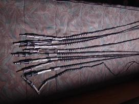

Televizorių antenos – TECHNORAMA
 8 700 70200 (I-V 9:00 - 18:00) Sveiki! Prisijungti Jūsų krepšelis 0 0,00 €
8 700 70200 (I-V 9:00 - 18:00) Sveiki! Prisijungti Jūsų krepšelis 0 0,00 €
Kategorijos
Visos kategorijos Visos kategorijos Parduotuvės 8 700 70200 (I-V 9:00 - 18:00) Prisijungti Prekių katalogas Atgal Priemonės nuo virusų Laisvalaikio prekėsTransportas Elektriniai paspirtukai Elektriniai dviračiai Elektriniai motoroleriai Dviračiai Mechaniniai paspirtukai Dviračių priedai Dronai Vakarėlių kolonėlės Griliai Žuvų ieškikliai Šviesos efektai Grilių priedai Prekės gyvūnams Elektriniai žiebtuvėliai Treniruokliai Sportas ir turizmas Vaizdo ir garso technika
Televizoriai 2020 m. Samsung televizoriai Video ir audio aparatūra Muzikiniai centrai Magnetolos Radijos ir žadintuvai MP3/MP4 grotuvai Garso kolonėlės Hi-fi garso sistemos Ausinės Garso įrangos priedai Automobilinė įranga Autoregistratoriai Alkotesteriai Navigacinė įranga automobiliams FM moduliatoriai Kvapai automobiliui Automagnetolos Plokštelių grotuvai Televizorių priedai Stovai, laikikliai Antenos TV imtuvai TV/Audio laidai Plokštelės Naujos vinilo plokštelės Naudotos vinilo plokštelės Diktofonai Mikrofonai Smulki buitinė technika Grožio priežiūros technika Epiliatoriai ir moteriški skustuvai Plaukų formavimo ir tiesinimo prietaisai Manikūro pedikiūro priemonės Veidrodėliai Plaukų džiovintuvai Plaukų kirpimo mašinėlės Nosies plaukų kirpimo mašinėlės Barzdaskutės, barzdakirpės Sveikatos priežiūros prekės Elektriniai dantų šepetėliai Termometrai Buitinės svarstyklės Masažuokliai Masažinės vonelės Infraraudonųjų spindulių lempos Klimato kontrolės technika Ventiliatoriai Šildytuvai Kondicionieriai Tepaliniai radiatoriai Šaltkrepšiai Orų stotelės Aromato skleidikliai Oro drėkintuvai/valytuvai Dūmų - smalkių detektoriai Tekstilės priežiūros technika Laidynės Gariniai lygintuvai Lyginimo sistemos Siuvimo mašinos Maisto ruošimo ir smulkinimo technika Virtuviniai kombainai Virtuvinės svarstyklės Skanėstų gaminimo aparatai Sulčiaspaudės Kokteilinės Plakikliai Trintuvai Mėsmalės Pjaustyklės Vaisių džiovintuvai Vakuumatoriai Virimo ir kepimo technika Multifunkciniai puodai Maisto ruošimo puodai Garų puodai Virduliai Skrudintuvai Sumuštinės, vaflinės ir blyninės Gruzdintuvės (Fritiūrinės) Keptuvės Vaikų priežiūros prietaisai Puodeliai, termosai, gertuvės Vandens filtrai Stambi buitinė technika
Stambi technika Šaldytuvai Šaldikliai Skalbyklės Skalbyklės-džiovyklės Džiovyklės Indaplovės Kaitlentės Orkaitės Viryklės Gartraukiai Mikrobangų krosnelės Valymo technika Dulkių siurbliai Dulkių siurbliai – šluotos Dulkių siurbliai- robotai Langų valytuvai Dulkių siurblių priedai Pūkų surinktuvai Aukšto slėgio plovimo įrenginiai Mini viryklės Mini orkaitės Priedai virtuvės technikai Priemonės skalbimui Įmontuojama technika Žaidimų zona
Konsolės Playstation 5 Playstation 4 XBOX Kitos konsolės Priedai Pelės Klaviatūros Kilimėliai Ausinės Valdymo įrenginiai Kėdės Žaidimai Kompiuteriams XBOX Playstation 4 Žaidimai Nintendo Virtuali realybė Kavos zona Kavos aparatai Automatiniai Pusiau automatiniai Filtriniai kavos aparatai Kapsuliniai Espesso kavinukai Kava Kapsulės Pupelės Malta Kava
Saldumynai Kavamalės Jura parduotuvė Kavos aparatų priedai Kompiuterija
KOMPIUTERIAI Nešiojamieji kompiuteriai Planšetiniai kompiuteriai Staliniai kompiuteriai Periferija Monitoriai Spausdintuvai Skeneriai Projektoriai ir interaktyvios lentos Kompiuterinės kolonėlės Išorinės duomenų laikmenos Diskai (SSD/HDD) USB Atmintinės Atminties kortelės CD laikmenos Priedai Pelės Pelių kilimėliai Klaviatūros Aušinimo padai Kompiuterių krepšiai, kuprinės Planšetinių dėklai USB šakotuvai Kitos smulkmenos Eksplotacinės medžiagos Pakrovėjai APPLE parduotuvė Programinė įranga Operacinės sistemos Biuro programos Antivirusinės Vidiniai kompiuterių komponentai Pagrindinės plokštės (MBB) Diskai (HDD/SSD) Optiniai įrenginiai (ODD) Biuro technika Laminatoriai Popieriaus smulkintuvai Tinklo įranga IP kameros Grafinės planšetės Elektroninės skaityklės Telefonai ir laikrodžiai
Telefonai Mobiliųjų telefonų priedai Belaidės garso kolonėlės Telefonų dėkliukai Apsauginiai stikliukai ir plėvelės Atminties kortelės Krovikliai Laikikliai Laisvų rankų įranga Išorinės baterijos Dėvimi prietaisai Išmanieji laikrodžiai Išmanios apyrankės Apyrankių priedai Laikrodžių priedai APPLE parduotuvė Foto ir video technika
Fotoaparatai Veidrodiniai Kompaktiniai Kompaktiniai Momentiniai Fotoaparatų priedai Objektyvai Filtrai Štatyvai Atminties kortelės Kiti priedai Veiksmo kameros Elementai Veiksmo kamerų priedai Žaislai
Dėlionės LEGO konstruktoriai Stalo žaidimai Įrankiai
Sodo įrankiai Vejapjovės Trimeriai Pūstuvai Žirklės Namų apyvokos įrankiai Suktuvai-Gręžtuvai Universalūs Įrankiai Įrankių priedai APPLE parduotuvė parduotuvė Akcijos Išpardavimas Apple parduotuvė parduotuvė parduotuvė Meniu Meniu Parduotuvės Pristatymas Apmokėjimas Garantija, grąžinimas Kontaktai Paslaugos
Kategorijos
Visos kategorijos Visos kategorijos Parduotuvės 8 700 70200 (I-V 9:00 - 18:00) Prisijungti Prekių katalogas Atgal Priemonės nuo virusų Laisvalaikio prekėsTransportas Elektriniai paspirtukai Elektriniai dviračiai Elektriniai motoroleriai Dviračiai Mechaniniai paspirtukai Dviračių priedai Dronai Vakarėlių kolonėlės Griliai Žuvų ieškikliai Šviesos efektai Grilių priedai Prekės gyvūnams Elektriniai žiebtuvėliai Treniruokliai Sportas ir turizmas Vaizdo ir garso technika
Televizoriai 2020 m. Samsung televizoriai Video ir audio aparatūra Muzikiniai centrai Magnetolos Radijos ir žadintuvai MP3/MP4 grotuvai Garso kolonėlės Hi-fi garso sistemos Ausinės Garso įrangos priedai Automobilinė įranga Autoregistratoriai Alkotesteriai Navigacinė įranga automobiliams FM moduliatoriai Kvapai automobiliui Automagnetolos Plokštelių grotuvai Televizorių priedai Stovai, laikikliai Antenos TV imtuvai TV/Audio laidai Plokštelės Naujos vinilo plokštelės Naudotos vinilo plokštelės Diktofonai Mikrofonai Smulki buitinė technika Grožio priežiūros technika Epiliatoriai ir moteriški skustuvai Plaukų formavimo ir tiesinimo prietaisai Manikūro pedikiūro priemonės Veidrodėliai Plaukų džiovintuvai Plaukų kirpimo mašinėlės Nosies plaukų kirpimo mašinėlės Barzdaskutės, barzdakirpės Sveikatos priežiūros prekės Elektriniai dantų šepetėliai Termometrai Buitinės svarstyklės Masažuokliai Masažinės vonelės Infraraudonųjų spindulių lempos Klimato kontrolės technika Ventiliatoriai Šildytuvai Kondicionieriai Tepaliniai radiatoriai Šaltkrepšiai Orų stotelės Aromato skleidikliai Oro drėkintuvai/valytuvai Dūmų - smalkių detektoriai Tekstilės priežiūros technika Laidynės Gariniai lygintuvai Lyginimo sistemos Siuvimo mašinos Maisto ruošimo ir smulkinimo technika Virtuviniai kombainai Virtuvinės svarstyklės Skanėstų gaminimo aparatai Sulčiaspaudės Kokteilinės Plakikliai Trintuvai Mėsmalės Pjaustyklės Vaisių džiovintuvai Vakuumatoriai Virimo ir kepimo technika Multifunkciniai puodai Maisto ruošimo puodai Garų puodai Virduliai Skrudintuvai Sumuštinės, vaflinės ir blyninės Gruzdintuvės (Fritiūrinės) Keptuvės Vaikų priežiūros prietaisai Puodeliai, termosai, gertuvės Vandens filtrai Stambi buitinė technika
Stambi technika Šaldytuvai Šaldikliai Skalbyklės Skalbyklės-džiovyklės Džiovyklės Indaplovės Kaitlentės Orkaitės Viryklės Gartraukiai Mikrobangų krosnelės Valymo technika Dulkių siurbliai Dulkių siurbliai – šluotos Dulkių siurbliai- robotai Langų valytuvai Dulkių siurblių priedai Pūkų surinktuvai Aukšto slėgio plovimo įrenginiai Mini viryklės Mini orkaitės Priedai virtuvės technikai Priemonės skalbimui Įmontuojama technika Žaidimų zona
Konsolės Playstation 5 Playstation 4 XBOX Kitos konsolės Priedai Pelės Klaviatūros Kilimėliai Ausinės Valdymo įrenginiai Kėdės Žaidimai Kompiuteriams XBOX Playstation 4 Žaidimai Nintendo Virtuali realybė Kavos zona Kavos aparatai Automatiniai Pusiau automatiniai Filtriniai kavos aparatai Kapsuliniai Espesso kavinukai Kava Kapsulės Pupelės Malta Kava
Saldumynai Kavamalės Jura parduotuvė Kavos aparatų priedai Kompiuterija
KOMPIUTERIAI Nešiojamieji kompiuteriai Planšetiniai kompiuteriai Staliniai kompiuteriai Periferija Monitoriai Spausdintuvai Skeneriai Projektoriai ir interaktyvios lentos Kompiuterinės kolonėlės Išorinės duomenų laikmenos Diskai (SSD/HDD) USB Atmintinės Atminties kortelės CD laikmenos Priedai Pelės Pelių kilimėliai Klaviatūros Aušinimo padai Kompiuterių krepšiai, kuprinės Planšetinių dėklai USB šakotuvai Kitos smulkmenos Eksplotacinės medžiagos Pakrovėjai APPLE parduotuvė Programinė įranga Operacinės sistemos Biuro programos Antivirusinės Vidiniai kompiuterių komponentai Pagrindinės plokštės (MBB) Diskai (HDD/SSD) Optiniai įrenginiai (ODD) Biuro technika Laminatoriai Popieriaus smulkintuvai Tinklo įranga IP kameros Grafinės planšetės Elektroninės skaityklės Telefonai ir laikrodžiai
Telefonai Mobiliųjų telefonų priedai Belaidės garso kolonėlės Telefonų dėkliukai Apsauginiai stikliukai ir plėvelės Atminties kortelės Krovikliai Laikikliai Laisvų rankų įranga Išorinės baterijos Dėvimi prietaisai Išmanieji laikrodžiai Išmanios apyrankės Apyrankių priedai Laikrodžių priedai APPLE parduotuvė Foto ir video technika
Fotoaparatai Veidrodiniai Kompaktiniai Kompaktiniai Momentiniai Fotoaparatų priedai Objektyvai Filtrai Štatyvai Atminties kortelės Kiti priedai Veiksmo kameros Elementai Veiksmo kamerų priedai Žaislai
Dėlionės LEGO konstruktoriai Stalo žaidimai Įrankiai
Sodo įrankiai Vejapjovės Trimeriai Pūstuvai Žirklės Namų apyvokos įrankiai Suktuvai-Gręžtuvai Universalūs Įrankiai Įrankių priedai APPLE parduotuvė parduotuvė Akcijos Išpardavimas Apple parduotuvė parduotuvė parduotuvė 8 700 70200 (I-V 9:00 - 18:00) Sveiki! Prisijungti Jūsų krepšelis 0 0,00 € Pagrindinis Vaizdo ir garso technika Televizorių priedai Antenos
Filtruoti pagal
Išvalyti filtrus Žiūrėti prekes 24 FiltrasAntenos
Prekių puslapyje 12 12 24 36 48 Prekių filtras Rikiuoti pagal: Rikiuoti Kaina, nuo žemiausios Nuo A iki Z Nuo Z iki A Kaina, nuo žemiausios Kaina, nuo aukščiausios Rikiuoti pagal: Rikiuoti Kaina, nuo žemiausios Nuo A iki Z Nuo Z iki A Kaina, nuo žemiausios Kaina, nuo aukščiausiosAntenos tvirtinimas L50 (L20 antenai)
2,99 € PirktiStiprintuvas TV antenai 60-110km 26db
3,99 € PirktiAnteninis stiprintuvas LNA-430 FF
4,99 € PirktiAntenos tvirtinimas L200
6,99 € IšparduotaAntenos kabelis HAMA plug-sock 122419
8,99 € IšparduotaAntena TV STAR T-1013UHF
9,99 € PirktiTV Antena lauko UHF/VHF OD5VU
11,99 € PirktiAntena TV STAR T-415A
13,99 € PirktiAntena TV lauko Y-1013UF
13,99 € IšparduotaUniversali aktyvi DVB-T antena IL10U-A
14,99 € IšparduotaAntena TV STAR T-1115 TRIPLEX UHF
15,99 € PirktiAntena TV STAR T-1116 TRIPLEX UHF
18,00 € Pirkti Puslapis : 1 2GAUKITE IŠSKIRTINIUS PASIŪLYMUS
Apie įmonę
Karjera Kontaktai Parduotuvės Technorama.lt ⠇ x Prekių palyginimas Palyginti dabar Pakeisti palyginimo meniu Pašalinti iš palyginimoInformacija pirkėjams
Privatumo politika Pirkimo taisyklės Garantija/Grąžinimas Pristatymas Apmokėjimas PaslaugosParduotuvių tinklas
6 parduotuvės 4 miestuose.Sužinokite darbo laiką ir adresą. Surask mus:
Visos teisės saugomos.
